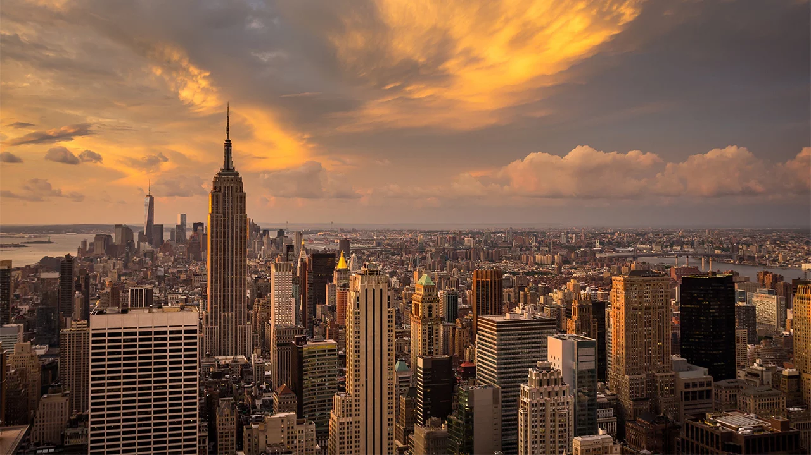
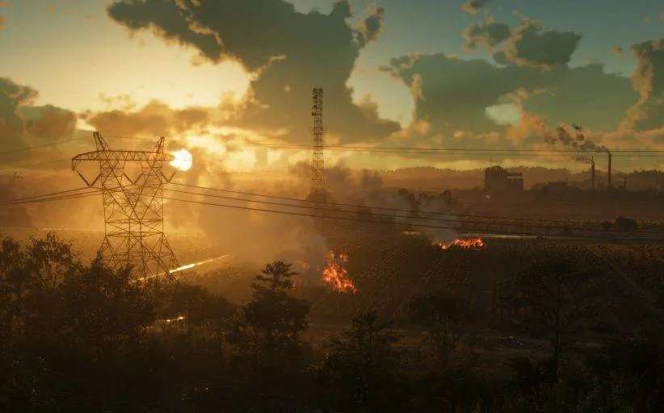
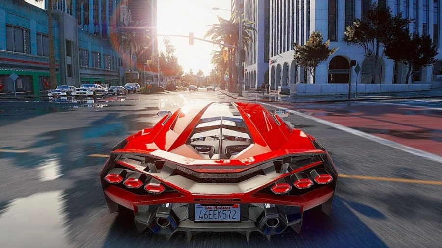
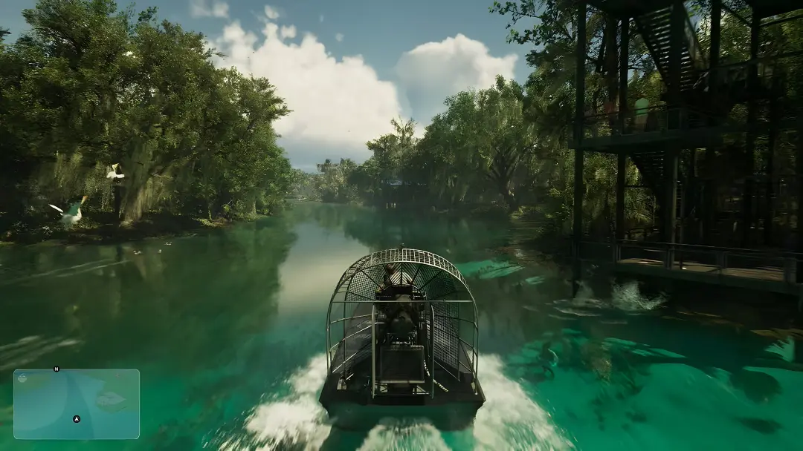
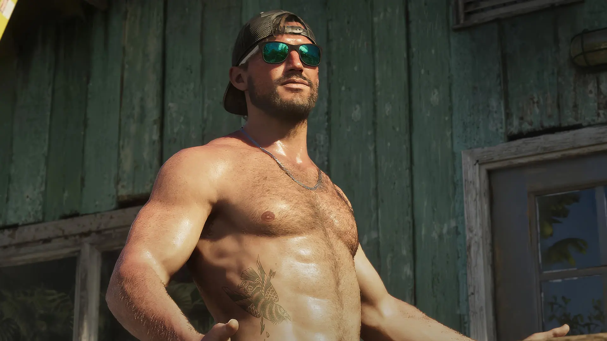

۰۱ / محیط بازی
شهری پر از زندگی
از خیابانهای شلوغ تا سواحل آفتابی؛ دنیایی الهامگرفته از فلوریدا.
به ایالت لئونیدا خوش آمدید
شهری که هرگز نمیخوابد.
داستانی که هرگز فراموش نمیشود.
آغاز یک دوران تازه
پشت نورهای رنگارنگ شهر، هر رؤیایی بهایی دارد و هر انتخاب، سرنوشتی به دنبال خواهد داشت.
شهری برای زندگی، رؤیا و خطر
جایی که خورشید به افق شهر میرسد و شب، داستان تازهای را آغاز میکند.

شهری زنده و پر از فرصت، خطر و لحظات فراموشنشدنی؛ جایی که هر خیابان میتواند آغاز یک ماجرای تازه باشد.
فراتر از یک بازی ویدیویی
Grand Theft Auto VI جدیدترین قسمت از مجموعه محبوب Grand Theft Auto است که ما را به ایالت خیالی لئونیدا و شهر آشنای وایس سیتی میبرد.
داستان بازی حول زندگی لوسیا و جیسون شکل میگیرد؛ دو شخصیتی که در دنیایی پر از فرصت، خطر و تصمیمهای دشوار، مسیر مشترکی را آغاز میکنند.
این بار قرار است با محیطی گسترده، فضایی الهامگرفته از فلوریدا و روایتی متفاوت روبهرو شویم.
چیزهایی که این دنیا را خاص میکنند
نگاهی به جنبههای مختلف دنیای Grand Theft Auto VI

از خیابانهای شلوغ تا سواحل آفتابی؛ دنیایی الهامگرفته از فلوریدا.

دنیای بازی را از پشت فرمان کشف کن.

مناطق طبیعی و مناظر متنوع ایالت لئونیدا.
این تصاویر برای معرفی فضای بازی هستند؛ ویژگیهای گیمپلی تأییدنشده بهعنوان قابلیت قطعی معرفی نمیشوند.
سالها تلاش برای یک تجربه بزرگ
مسیر شکلگیری یکی از موردانتظارترین بازیهای تاریخ.
تحقیقات میدانی و بررسی محیطهای الهامبخش بازی.
پس از عرضه Red Dead Redemption 2، مسیر پروژه جدید جدیتر شد.
طبق گفته Take-Two، توسعه جدی بازی از این سال آغاز شد.
Rockstar توسعه قسمت بعدی مجموعه را تأیید کرد.
جهان GTA VI برای اولین بار به شکل رسمی معرفی شد.
دو زندگی، یک سرنوشت
بعضی داستانها را باید در کنار هم روایت کرد.
او میداند چه چیزی میخواهد.

در این دنیا، اعتماد همه چیز است.

دنیایی بدون مرز
از خیابانهای شلوغ شهر تا سواحل بیانتها؛ هر گوشه از این دنیا، ماجرایی تازه در انتظار تو دارد.
بازگشت به ابتدای داستان ↗انتظار، بخشی از این ماجراجویی است
GRAND THEFT AUTO VI — تجربه هواداری